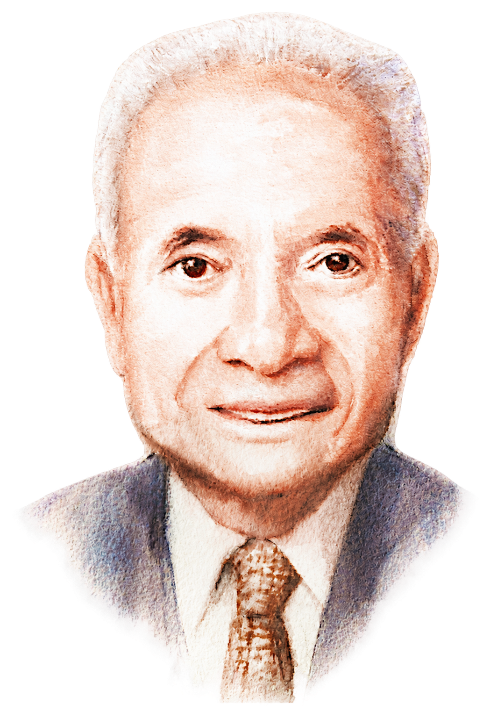

Our Values
A Legacy of Compassion
A Legacy of Compassion
The D. H. Chen Foundation was established upon the values and philanthropic spirit of our Founder, Dr. Din Hwa Chen (1923-2012).
A respected entrepreneur and philanthropist, Dr. Chen built a successful business while remaining deeply committed to the wellbeing of others. Throughout his life, he demonstrated a simple yet profound belief: to care for others as well as you would care for yourself.
Often approached to support worthy causes, Dr. Chen responded with characteristic humility and generosity: "We will help if we can." He chose not to question others' intentions, offering both resources and trust whenever possible. His willingness to help, coupled with his respect for people and belief in their potential, became a hallmark of his philanthropic approach.
Today, Dr. Chen's legacy continues to guide the Foundation through the stewardship of the Chen family and our leadership team.
Meet the People Behind Our MissionAt the Foundation, compassion is more than an aspiration. It is a way of seeing, relating, and acting. It shapes how we engage with partners, support communities, make decisions, and pursue meaningful change.
Where Our Values Begin

Born in Ningbo, Zhejiang, in 1923, Dr. Chen moved to Hong Kong in his twenties and founded Nan Fung Textiles Limited in 1954. What began as a textile business grew into a diversified enterprise, eventually expanding into property development under his leadership. Today, Nan Fung Group encompasses more than 400 companies worldwide.
Beyond his business achievements, Dr. Chen was deeply committed to public service. A strong advocate for commerce and industry, he also dedicated himself to supporting social welfare, education, and cultural development in Hong Kong. Through service on numerous public and charitable bodies, he contributed his experience and insight to the advancement of the wider community.
As one of the pioneers of family philanthropy in Hong Kong, Dr. Chen believed that success carried a responsibility to contribute to society. His philanthropy was grounded not in recognition or prestige, but in compassion, humility, and a genuine desire to improve the lives of others. These principles continue to inspire and inform the Foundation's work today.
Compassion in Action
Inspired by Dr. Chen's philanthropic spirit, our values guide how we steward resources, cultivate partnerships, and support positive change. Together, they help us translate compassion into action and contribute to a more caring, connected, and compassionate society.
-
Gratitude
We recognise that lasting change is made possible through the contributions of many.
We approach our work with appreciation for the experiences, wisdom, and commitment of our partners, communities, and supporters. Gratitude reminds us to celebrate progress, acknowledge shared achievements, and remain humble in our role as one contributor within a broader ecosystem of change.
-
Openness
We remain curious, reflective, and willing to learn.
Openness invites us to explore new possibilities, embrace diverse perspectives, and stay responsive to emerging needs. It encourages honest dialogue, transparency, and a willingness to adapt as we deepen our understanding of the complex challenges facing society.
-
Respect
We believe every person possesses inherent worth and potential.
Respect shapes how we listen, engage, and collaborate. We seek to create spaces where diverse experiences and viewpoints are valued, where differences are approached with understanding, and where relationships are built on dignity and mutual regard.
-
Selflessness
We place collective impact above individual recognition.
Selflessness reminds us to focus on what best serves communities and the common good. It encourages collaboration over competition, shared learning over ownership, and long-term social progress over short-term gains.
-
Trust
Meaningful partnerships are built on trust.
We cultivate trust through integrity, consistency, and transparency. By fostering authentic relationships and creating environments where ideas can be shared openly, we strengthen our capacity to learn together and create lasting impact.
Living Our Values
These values are not simply principles we uphold. They are expressed through how we partner, learn, invest, and act.
By living these values, we seek to nurture human potential, strengthen communities, and create the conditions for individuals, organisations, and society to thrive. Together, we contribute to the Foundation's enduring vision of a more caring, connected, and compassionate world.